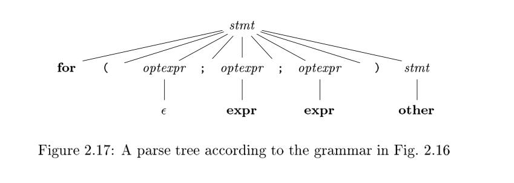
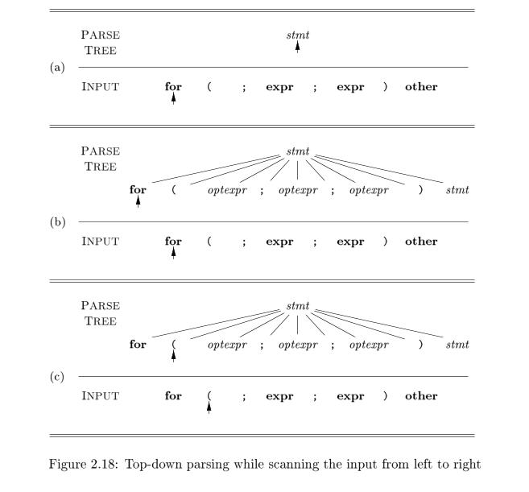

2.4 Parsing
Parsing is the process of determining how a string of terminals can be generated by a grammar. In discussing this problem, it is helpful to think of a parse tree being constructed, even though a compiler may not construct one, in practice. However, a parser must be capable of constructing the tree in principle, or else the translation cannot be guaranteed correct.
NOTE: The concept of parsing is introduced in chapter 2.2.2 Derivations
This section introduces a parsing method called "recursive descent," which can be used both to parse and to implement syntax-directed translators. A complete Java program, implementing the translation scheme of Fig. 2.15, appears in the next section. A viable alternative is to use a software tool to generate a translator directly from a translation scheme. Section 4.9 describes such a tool Yacc; it can implement the translation scheme of Fig. 2.15 without modification.
For any context-free grammar there is a parser that takes at most O (n^3) time to parse a string of n terminals. But cubic(立方的) time is generally too expensive. Fortunately, for real programming languages, we can generally design a grammar that can be parsed quickly. Linear-time algorithms suffice to parse essentially all languages that arise in practice. Programming-language parsers almost always make a single left-to-right scan over the input, looking ahead one terminal at a time, and constructing pieces of the parse tree as they go.
Most parsing methods fall into one of two classes, called the top-down and bottom-up methods. These terms refer to the order in which nodes in the parse tree are constructed. In top-down parsers, construction starts at the root and proceeds towards the leaves, while in bottom-up parsers, construction starts at the leaves and proceeds towards the root. The popularity of top-down parsers is due to the fact that efficient parsers can be constructed more easily by hand using top-down methods. Bottom-up parsing, however, can handle a larger class of grammars and translation schemes, so software tools for generating parsers directly from grammars often use bottom-up methods.
NOTE:
参见 wikipedia Parsing algorithms
2.4.1 Top-Down Parsing
We introduce top-down parsing by considering a grammar that is well-suited for this class of methods. Later in this section, we consider the construction of top-down parsers in general. The grammar in Fig. 2.16 generates a subset of the statements of C or Java. We use the boldface terminals if and for for the keywords "if" and "for", respectively, to emphasize that these character sequences are treated as units, i.e., as single terminal symbols. Further, the terminal expr represents expressions; a more complete grammar would use a nonterminal expr and have productions for nonterminal expr. Similarly, other is a terminal representing other statement constructs.

The top-down construction of a parse tree like the one in Fig. 2.17, is done by starting with the root, labeled with the starting nonterminal stmt, and repeatedly performing the following two steps.
1、At node N , labeled with nonterminal A, select one of the productions for A and construct children at N for the symbols in the production body.
2、Find the next node at which a subtree is to be constructed, typically the leftmost unexpanded nonterminal of the tree.

For some grammars, the above steps can be implemented during a single left-to-right scan of the input string. The current terminal being scanned in the input is frequently referred to as the lookahead symbol. Initially, the lookahead symbol is the first, i.e., leftmost, terminal of the input string. Figure 2.18 illustrates the construction of the parse tree in Fig. 2.17 for the input string
for ( ; expr ; expr ) other

Initially, the terminal for is the lookahead symbol, and the known part of the parse tree consists of the root, labeled with the starting nonterminal stmt in Fig. 2.18(a). The objective is to construct the remainder of the parse tree in such a way that the string generated by the parse tree matches the input string.
For a match to occur, the nonterminal stmt in Fig. 2.18(a) must derive(派生、expand) a string that starts with the lookahead symbol for. In the grammar of Fig. 2.16, there is just one production for stmt that can derive such a string, so we select it, and construct the children of the root labeled with the symbols in the production body. This expansion of the parse tree is shown in Fig. 2.18(b).
Each of the three snapshots in Fig. 2.18 has arrows marking the lookahead symbol in the input and the node in the parse tree that is being considered. Once children are constructed at a node, we next consider the leftmost child. In Fig. 2.18(b), children have just been constructed at the root, and the leftmost child labeled with for is being considered.
At the nonterminal node labeled optexpr, we repeat the process of selecting a production for a nonterminal. Productions with \epsilon as the body (" \epsilon -productions") require special treatment. For the moment, we use them as a default when no other production can be used; we return to them in Section 2.4.3. With nonterminal optexpr and lookahead ;, the \epsilon -productions is used, since ; does not match the only other production for optexpr, which has terminal expr as its body.
In general, the selection of a production for a nonterminal may involve trial-and-error; that is, we may have to try a production and backtrack to try another production if the first is found to be unsuitable. A production is unsuitable if, after using the production, we cannot complete the tree to match the input string. Backtracking is not needed, however, in an important special case called predictive parsing, which we discuss next.
NOTE: There is a good illustration of Top-Down Parser in this blog.
2.4.2 Predictive Parsing
Recursive-descent parsing is a top-down method of syntax analysis in which a set of recursive procedures is used to process the input. One procedure is associated with each nonterminal of a grammar. Here, we consider a simple form of recursive-descent parsing, called predictive parsing, in which the lookahead symbol unambiguously determines the flow of control through the procedure body for each nonterminal. The sequence of procedure calls during the analysis of an input string implicitly defines a parse tree for the input, and can be used to build an explicit parse tree, if desired.
The predictive parser in Fig. 2.19 consists of procedures for the nonterminals stmt and optexpr of the grammar in Fig. 2.16 and an additional procedure match, used to simplify the code for stmt and optexpr. Procedure match(t) compares its argument t with the lookahead symbol and advances to the next input terminal if they match. Thus match changes the value of variable lookahead, a global variable that holds the currently scanned input terminal.
void stmt () {
switch ( lookahead ) {
case expr:
match (expr); match (';'); break;
case 'if':
match ('if'); match ('('); match (expr); match (')'); stmt ();
break;
case 'for':
match ('for'); match ('(');
optexpr (); match (';'); optexpr (); match (';'); optexpr ();
match (')'); stmt (); break;
case other;
match (other); break;
default:
report ("syntax error");
}
void optexpr () {
if ( lookahead == expr ) match (expr);
}
void match (terminal t) {
if ( lookahead == t ) lookahead = nextTerminal;
else report ("syntax error");
}
Figure 2.19: Pseudo code for a predictive parser
NOTE: A predictive parsing approach is one that hardcodes the grammar into the program
Parsing begins with a call of the procedure for the starting nonterminal stmt. With the same input as in Fig. 2.18, lookahead is initially the first terminal for. Procedure stmt executes code corresponding to the production
$$
stmt \to for ( optexpr ; optexpr ; optexpr ) stmt
$$
In the code for the production body -- that is, the for case of procedure stmt--each terminal is matched with the lookahead symbol, and each nonterminal leads to a call of its procedure, in the following sequence of calls:
match (for); match ('(');
optexpr (); match (';'); optexpr (); match (';'); optexpr ();
match (')'); stmt ();
Predictive parsing relies on information about the first symbols that can be generated by a production body. More precisely, let \alpha be a string of grammar symbols (terminals and/or nonterminals). We define FIRST (\alpha) to be the set of terminals that appear as the first symbols of one or more strings of terminals generated from \alpha. If \alpha is \epsilon or can generate \epsilon , then \epsilon is also in FIRST (\alpha).
NOTE: Only when FIRST (\alpha) is known, can flow of control determine.
The details of how one computes FIRST (\alpha) are in Section 4.4.2. Here, we shall just use ad hoc reasoning to deduce the symbols in FIRST (\alpha); typically, \alpha will either begin with a terminal, which is therefore the only symbol in FIRST (\alpha), or \alpha will begin with a nonterminal whose production bodies begin with terminals, in which case these terminals are the only members of FIRST (\alpha).
For example, with respect to the grammar of Fig. 2.16, the following are correct calculations of FIRST.
FIRST (stmt) = {expr; if; for; other}
FIRST(expr ;) = {expr}
NOTE:
FIRST (stmt)corresponds to the case ofvoid stmt ().
The FIRST sets must be considered if there are two pro ductions A \to \alpha and A \to \beta . Ignoring \epsilon- productions for the moment, predictive parsing requires FIRST (\alpha) and FIRST(\beta ) to b e disjoint. The lookahead symbol can then be used to decide which production to use; if the lookahead symbol is in FIRST (\alpha), then \alpha is used. Otherwise, if the lookahead symbol is in FIRST (\beta), then \beta is used.